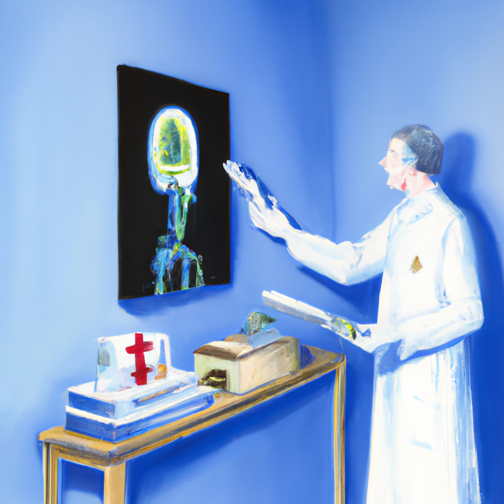

Why AI will never replace the radiologist
Artificial Intelligence (AI) has become a hot topic in recent years as it has been used increasingly in various fields of medicine. As its use becomes more widespread, there is much speculation about whether AI can be used to replace radiologists in the diagnosis of imaging studies. While AI has the potential to improve the accuracy of diagnoses, there are many reasons why it can never entirely replace radiologists.
First and foremost, AI is only as good as the data it is given. For example, if an AI system is given a data set of images of people with a certain medical condition, it will be able to accurately diagnose that condition in future images. But if the AI system is given a data set of images taken from different patients, it may not be able to accurately diagnose the same condition. This is because AI is limited by the data it is given and is not able to recognize patterns that a radiologist can.
Second, AI systems are not able to think critically or make decisions in the same way that a human being can. While AI can be programmed to recognize certain patterns, it cannot make the same kind of judgment calls that a radiologist can. For example, if an AI system is given an image of a tumor and is asked to